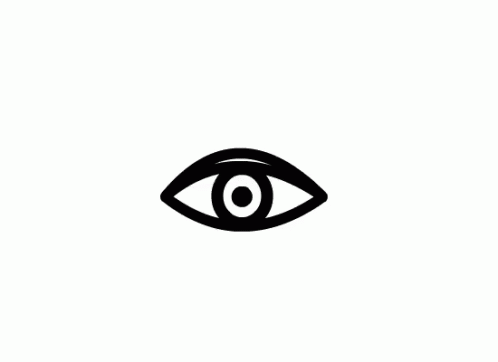
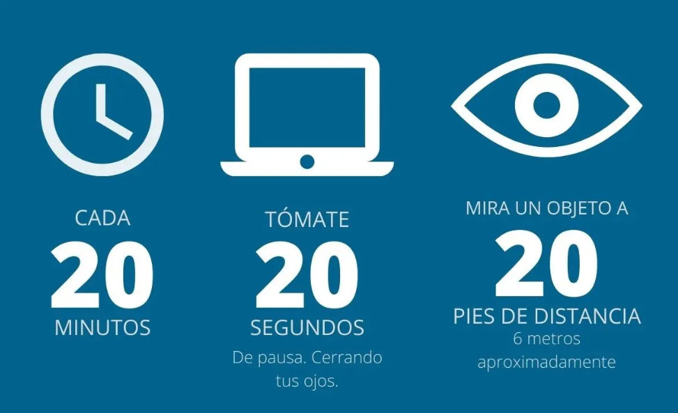
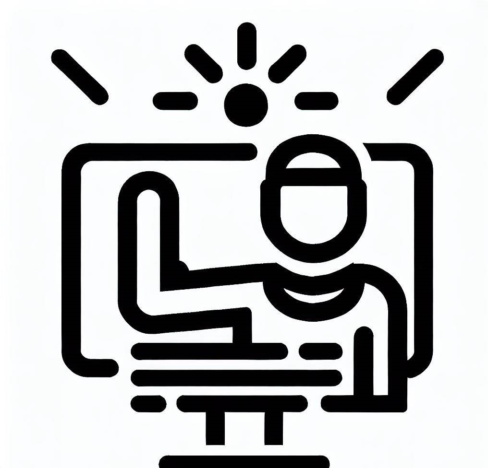
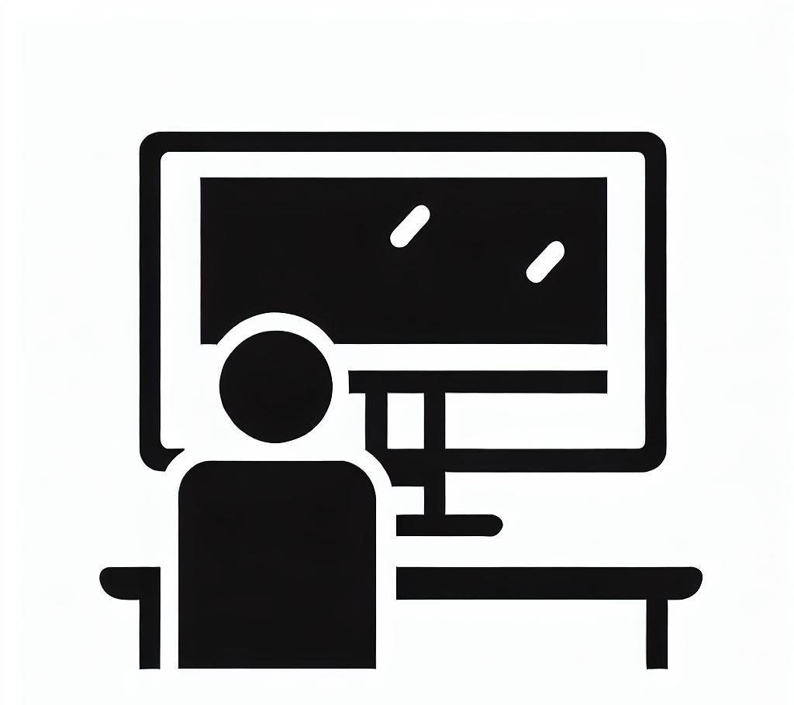

Conoce las practicas que pueden ayudar a mejorar tu calidad de vista
Forzar parpadeo
Un mal hábito frecuente al utilizar pantallas por periodos de tiempo extensos es el no parpadear por intervalos de tiempo demasiado largos de manera regular. Esto contribuye a la resequedad de los ojos y causa incomodidad a la persona. Para auxiliar en esto, se recomienda forzar el parpadeo cerrando los ojos durante 20 segundos.
Regla de las 20
Se recomienda levantar la vista cada 20 minutos durante 20 segundos y enfocar a un objeto que se encuentre aproximadamente a 6 metros.
Iluminacion y reflejo
La luz brillante y el reflejo excesivo pueden cansar los ojos y dificultar la vista. Si necesitas luz para escribir o leer, utiliza una lámpara de escritorio ajustable. Cierra las persionas o cortinas y evita colocar el monitor directamente frente a una ventana o una pared blanca.
Ajustes de monitor y configuración
Coloca el monitor directamente frente a ti, aproximadamente a un brazo de distancia, de manera tal que la parte superior de la pantalla este al nivel de los ojos o justo por debajo. Tambien es util tener una silla que puedas regular. Ademas, se recomienda ajustar el tamaño de la letra para que pueda leerse claramente.
